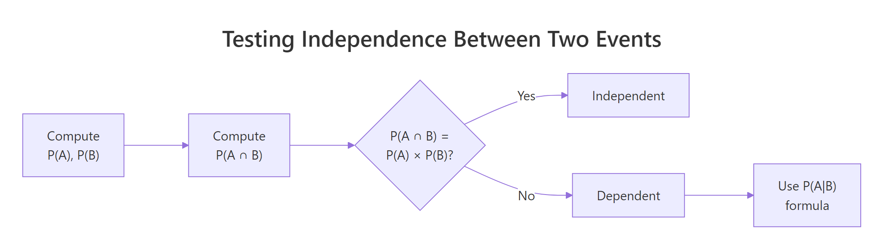
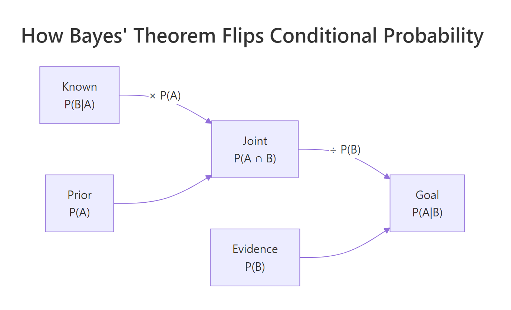
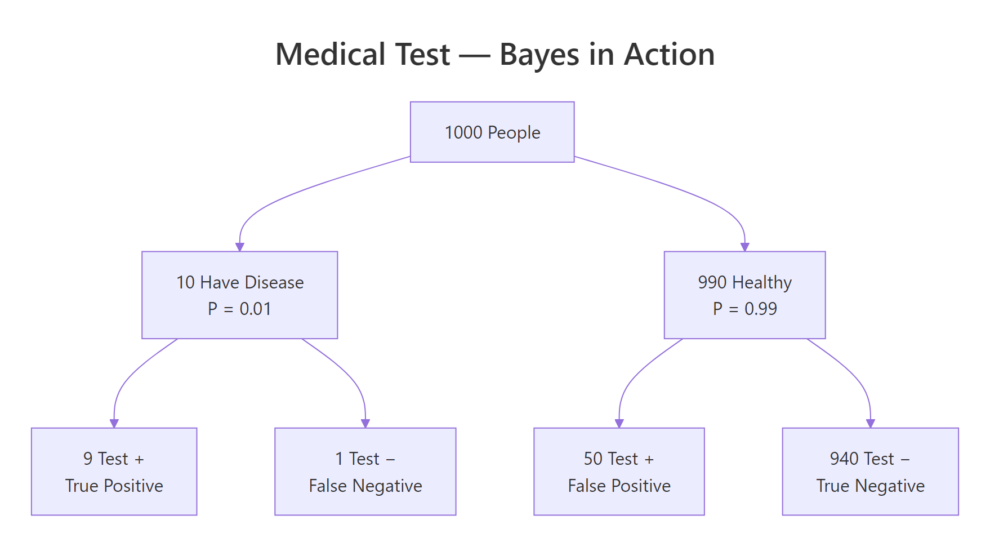

Conditional Probability in R: P(A|B), Independence, and Bayes, With Real Examples
By Selva Prabhakaran · Published May 6, 2026 · Last updated May 6, 2026
Conditional probability measures how the chance of one event changes when you know another event already happened, written P(A|B) and read "the probability of A given B." In this tutorial you'll simulate conditional probabilities in R, prove when events are independent, and apply Bayes' theorem to a medical-testing scenario where the "obvious" answer is wrong.
What is conditional probability and how do you calculate P(A|B)?
Imagine you roll a fair die and it lands on an even number. What's the probability the roll is also greater than 4? Knowing the die is even shrinks the possible outcomes from six to three, {2, 4, 6}, and only one of those (6) is greater than 4. That gives us 1/3 instead of the unconditional 2/6.
Let's confirm this with a simulation of 100,000 rolls.
RSimulate P greater than 4 given even
# Simulate conditional probability: P(>4 | even)set.seed(42)rolls <-sample(1:6, size =100000, replace =TRUE)# Filter to only even rolls (our "given" event)even_rolls <- rolls[rolls %%2==0]# Among even rolls, what fraction are > 4?p_gt4_given_even <-mean(even_rolls >4)p_gt4_given_even#> [1] 0.3332# Compare to unconditional P(> 4)p_gt4 <-mean(rolls >4)p_gt4#> [1] 0.3336
The simulation gives us roughly 0.333, exactly 1/3. Notice that P(>4) unconditionally is also about 1/3 in this case, but that's a coincidence of these particular events. The key idea is that we restricted our universe to even rolls before asking the question.
The formal formula captures this "restrict and re-normalise" logic:
$$P(A|B) = \frac{P(A \cap B)}{P(B)}$$
Where:
$P(A|B)$ = probability of A given B has occurred
$P(A \cap B)$ = probability both A and B happen (joint probability)
$P(B)$ = probability of the conditioning event
Let's verify the formula matches our simulation.
RVerify with joint formula
# Verify with the formula: P(A ∩ B) / P(B)# A = roll > 4, B = roll is even# A ∩ B = roll is 6 (only number that's both > 4 and even)p_a_and_b <-mean(rolls ==6)p_b <-mean(rolls %%2==0)p_formula <- p_a_and_b / p_bp_formula#> [1] 0.3332
Both approaches, simulation and formula, give the same answer. That's the power of Monte Carlo: you can always check a formula by simulating the experiment thousands of times.
Key Insight
Conditioning shrinks the sample space. P(A|B) doesn't change event A, it changes the universe of outcomes you're considering. You throw away everything where B didn't happen, then ask "what fraction of what's left is A?"
Try it: Given a die roll is odd, what's the probability it's less than or equal to 3? Simulate with 100,000 rolls and verify the answer is 2/3.
Explanation: The odd outcomes are {1, 3, 5}. Two of those three (1 and 3) are ≤ 3, so the answer is 2/3 ≈ 0.667.
How does joint probability connect to conditional probability?
The conditional probability formula can be rearranged into the multiplication rule, a way to compute the probability that two events both happen:
$$P(A \cap B) = P(A|B) \times P(B)$$
This says: the chance of A and B equals the chance of B times the chance of A given B. Think of it as a two-step process, first B happens, then A happens in that restricted world.
Let's test this with playing cards. What's the probability of drawing a card that is both red and a face card?
RJoint card probability simulation
# Joint probability: P(Red ∩ Face) via simulationset.seed(123)n_sims <-50000# Simulate card draws (1-52)draws <-sample(1:52, size = n_sims, replace =TRUE)# In a standard deck: cards 1-26 are red, 27-52 are black# Face cards (J, Q, K) are cards 11-13, 24-26, 37-39, 50-52face_positions <-c(11:13, 24:26, 37:39, 50:52)is_red <- draws <=26is_face <- draws %in% face_positions# Empirical joint probabilityp_red_and_face <-mean(is_red & is_face)p_red_and_face#> [1] 0.1155# Verify via multiplication rule: P(Face|Red) × P(Red)p_red <-mean(is_red)p_face_given_red <-mean(is_face[is_red])p_multiplication <- p_face_given_red * p_redp_multiplication#> [1] 0.1155# Theoretical: 6 red face cards / 52 = 0.11546/52#> [1] 0.1154
The simulation, the multiplication rule, and the theoretical calculation all converge on about 0.115. There are 6 red face cards (Jack, Queen, King of Hearts and Diamonds) out of 52 total cards.
Tip
The multiplication rule is just the conditional probability formula rearranged. If you know P(A|B) and P(B), multiply them to get P(A ∩ B). If you know P(A ∩ B) and P(B), divide to get P(A|B). One formula, two directions.
Try it: In a standard 52-card deck, what's P(Heart ∩ King)? There's exactly 1 King of Hearts. Compute it using the multiplication rule, P(King|Heart) × P(Heart), and verify with simulation.
RExercise: Heart and King joint
# Try it: P(Heart ∩ King)set.seed(200)ex_draws <-sample(1:52, size =50000, replace =TRUE)# Hearts are cards 1-13, Kings are cards 13, 26, 39, 52ex_is_heart <- ex_draws <=13ex_is_king <- ex_draws %in%c(13, 26, 39, 52)# your code here: compute empirical P(Heart ∩ King)# and verify via P(King|Heart) × P(Heart)#> Expected: ~0.0192 (1/52)
When the first card is an Ace, only 3 Aces remain among 51 cards, so P(2nd Ace | 1st Ace) = 3/51 ≈ 0.059, noticeably lower than the unconditional 4/52 ≈ 0.077. The first draw changed the odds. These events are dependent.

Figure 1: How to check whether two events are independent in R.
Warning
Don't confuse "independent" with "mutually exclusive." Mutually exclusive events (like rolling a 2 and rolling a 5 on one die) can't happen together, they are maximally dependent. If one happens, the other definitely didn't. Independent events can and do happen together; they just don't influence each other's probabilities.
Try it: Roll two dice. Are the events "sum equals 7" and "die 1 equals 3" independent? Simulate 100,000 rolls and compare P(sum = 7) with P(sum = 7 | die1 = 3).
RExercise: Sum 7 and die 1
# Try it: are "sum = 7" and "die1 = 3" independent?set.seed(300)ex_d1 <-sample(1:6, 100000, replace =TRUE)ex_d2 <-sample(1:6, 100000, replace =TRUE)ex_sum <- ex_d1 + ex_d2# your code here# Compute P(sum = 7) and P(sum = 7 | die1 = 3)#> Expected: both ≈ 0.167 (they ARE independent)
Explanation: For any value of die 1, there's exactly one value of die 2 that makes the sum 7. So P(sum = 7 | die1 = k) = 1/6 for any k, which equals P(sum = 7) = 6/36 = 1/6. The events are independent.
How do you test independence statistically with the chi-squared test?
The simulations above work when you know the exact probability model. But with real-world data, survey responses, medical records, experiment results, you have a contingency table and need a formal test.
The chi-squared test of independence asks: "Could the pattern in this table have arisen by chance if the two variables were truly independent?" The null hypothesis is independence; a small p-value means you reject it.
RChi-squared on smoking survey
# Chi-squared test: smoking status vs exercise frequency# Observed data from a hypothetical survey of 400 peoplesurvey_table <-matrix(c(30, 50, 70, # Non-smoker: Low/Medium/High exercise45, 35, 20, # Light smoker50, 60, 40), # Heavy smoker nrow =3, byrow =TRUE, dimnames =list( Smoking =c("Non-smoker", "Light", "Heavy"), Exercise =c("Low", "Medium", "High") ))survey_table#> Exercise#> Smoking Low Medium High#> Non-smoker 30 50 70#> Light 45 35 20#> Heavy 50 60 40chi_result <-chisq.test(survey_table)chi_result#> Pearson's Chi-squared test#>#> data: survey_table#> X-squared = 33.849, df = 4, p-value = 7.994e-07
The p-value is extremely small (less than 0.001), so we reject the null hypothesis. Smoking status and exercise frequency are not independent in this sample, they are associated.
Now let's see what happens when we test two variables that we know are independent: two separate coin flips.
The p-value is 0.43, far above any reasonable threshold (0.05). We fail to reject the null. The test correctly finds no evidence of association, because the two coin flips really are independent.
Note
The chi-squared test needs expected cell counts of at least 5. If your contingency table has very small counts (sparse data), use Fisher's exact test instead: fisher.test(your_table). It gives exact p-values without relying on the chi-squared approximation.
Try it: Create a 2×3 contingency table for gender (Male/Female) vs favourite language (R/Python/Julia) using made-up data. Run the chi-squared test and interpret whether gender and language preference are independent.
RExercise: Gender language association
# Try it: gender vs programming languageex_lang_table <-matrix(c(40, 35, 25, # Male: R/Python/Julia45, 30, 25), # Female: R/Python/Julia nrow =2, byrow =TRUE, dimnames =list( Gender =c("Male", "Female"), Language =c("R", "Python", "Julia") ))# your code here: run chisq.test() and interpret p-value#> Expected: p > 0.05 (these counts suggest no strong association)
Explanation: The p-value (0.77) is well above 0.05, so we fail to reject the null. There's no evidence that gender and language preference are associated in this data.
What is Bayes' theorem and why does it produce surprising results?
Everything so far has moved in one direction: given what we know, what's the probability of what we observe? Bayes' theorem flips this around: given what we observe, what should we now believe?
The formula comes directly from the definition of conditional probability. We know that:
Solving both for $P(A \cap B)$ and setting them equal gives us Bayes' theorem:
$$P(A|B) = \frac{P(B|A) \times P(A)}{P(B)}$$
Where:
$P(A|B)$ = posterior, what we want (updated belief after seeing B)
$P(B|A)$ = likelihood, how likely is B if A is true
$P(A)$ = prior, our belief before seeing B
$P(B)$ = evidence, the total probability of B across all scenarios
If you're not interested in the derivation, the formula above is all you need, let's see it in action.

Figure 2: How Bayes' theorem flips a conditional probability from P(B|A) to P(A|B).
Here's where Bayes gets counter-intuitive. Suppose a disease affects 1% of the population. A test for this disease has 90% sensitivity (correctly detects 90% of sick people) and 95% specificity (correctly clears 95% of healthy people). You test positive. What's the probability you actually have the disease?
Most people guess 90%, after all, the test is 90% accurate. The real answer is shockingly low.
Only about 15.4%, not 90%. A positive result means you're far more likely to be healthy than sick. How is that possible?

Figure 3: A probability tree for 1,000 people, most positive tests are false positives when the disease is rare.
The tree makes it clear. Out of 1,000 people, only 10 have the disease (1%). The test catches 9 of them (true positives). But among the 990 healthy people, the 5% false positive rate produces 50 false alarms. So out of 59 total positives, only 9 actually have the disease: 9/59 ≈ 15.3%.
Key Insight
When a disease is rare, even a good test produces mostly false positives. The base rate (prior probability) dominates. A test with 90% sensitivity and 95% specificity sounds great, but against a 1% prevalence, false positives outnumber true positives 5-to-1. Always consider prevalence before interpreting a test result.
Try it: Re-compute P(Disease | Positive) with a prevalence of 10% instead of 1%. How much does the posterior change?
RExercise: Prevalence at 10 percent
# Try it: what happens when prevalence = 10%?ex_prev <-0.10ex_p_pos <- sens * ex_prev + (1- spec) * (1- ex_prev)# your code here: compute P(Disease | Positive)#> Expected: ~0.667
Explanation: With 10% prevalence, a positive test now means a 66.7% chance of disease, up from 15.4%. The higher base rate means true positives far outnumber false positives. The same test performs dramatically differently depending on how common the disease is.
How does Bayesian updating work with multiple pieces of evidence?
A single test result moved our belief from 1% to 15.4%. But what if the person tests positive a second time? In Bayesian updating, the posterior from the first test becomes the prior for the second test.
RSequential Bayesian updating
# Bayesian updating: sequential positive testsprior <- prev # Start with 1% prevalence# First positive testp_pos_1 <- sens * prior + (1- spec) * (1- prior)posterior1 <- (sens * prior) / p_pos_1cat("After 1st positive test:", round(posterior1, 4), "\n")#> After 1st positive test: 0.1538# Second positive test, posterior1 becomes the new priorp_pos_2 <- sens * posterior1 + (1- spec) * (1- posterior1)posterior2 <- (sens * posterior1) / p_pos_2cat("After 2nd positive test:", round(posterior2, 4), "\n")#> After 2nd positive test: 0.7660# Third positive testp_pos_3 <- sens * posterior2 + (1- spec) * (1- posterior2)posterior3 <- (sens * posterior2) / p_pos_3cat("After 3rd positive test:", round(posterior3, 4), "\n")#> After 3rd positive test: 0.9834
Look at that progression: 1% → 15.4% → 76.6% → 98.3%. Each positive test is a new piece of evidence that shifts the belief. After three consecutive positives, the probability of disease is overwhelming.
Let's visualise this updating process.
RVisualise updating with bars
# Visualise Bayesian updatingprobs <-c(prior, posterior1, posterior2, posterior3)labels <-c("Prior\n(1%)", "After\nTest 1", "After\nTest 2", "After\nTest 3")barplot( probs, names.arg = labels, col =c("gray70", "#F4A460", "#E07020", "#C0392B"), ylim =c(0, 1), ylab ="P(Disease)", main ="Bayesian Updating: Belief After Each Positive Test", border =NA)abline(h =0.5, lty =2, col ="gray40")text(x =seq(0.7, by =1.2, length.out =4), y = probs +0.04, labels =paste0(round(probs *100, 1), "%"), cex =0.9)
The dashed line at 0.5 is the "more likely than not" threshold. After one test, we're still below it (15.4%). After two tests, we cross it decisively (76.6%). By the third test, we're nearly certain (98.3%).
Tip
Bayesian updating is everywhere in practice. Spam filters update P(spam) with each word they see in an email. Recommendation engines refine your preference profile with each click. Clinical decision tools combine multiple test results exactly this way, each new data point updates the prior, one step at a time.
Try it: Starting from the posterior3 value above (after 3 positive tests), what happens after a negative test result? Compute the posterior using P(Negative | Disease) = 1 - sensitivity.
RExercise: Negative test after positives
# Try it: what happens after a negative test?# P(Negative | Disease) = 1 - sens = 0.10# P(Negative | Healthy) = spec = 0.95ex_prior4 <- posterior3# your code here: compute P(Disease | Negative)#> Expected: the posterior drops significantly
Explanation: Even after a negative test, the posterior is still 86%, three prior positives built up so much evidence that one negative test only drops the belief from 98.3% to 86.1%. Bayesian updating works in both directions, but strong prior evidence takes multiple contrary observations to overcome.
Practice Exercises
Exercise 1: Factory defect analysis with Bayes' theorem
A factory has two machines. Machine A produces 60% of all items with a 3% defect rate. Machine B produces the remaining 40% with a 5% defect rate. An item chosen at random turns out to be defective. What's the probability it came from Machine A?
First compute the answer using Bayes' theorem, then verify with a simulation of 100,000 items.
Explanation: Despite Machine A making 60% of all products, it only accounts for about 47% of defects because its defect rate (3%) is lower than Machine B's (5%). The higher-volume machine contributes fewer defects per unit. Both the formula and simulation converge on ~0.474.
Exercise 2: The Monty Hall problem, simulated
In the classic Monty Hall problem, you pick one of three doors. Behind one door is a car; behind the other two are goats. The host (who knows what's behind the doors) opens a different door showing a goat, then asks if you want to switch.
Simulate 10,000 games. Compute P(Win | Switch) and P(Win | Stay) empirically. Explain the result using conditional probability.
RExercise: Monty Hall simulation
# Exercise 2: Monty Hall simulation# Hint: for each game, randomly place the car, pick a door,# have the host open a goat door, then track wins for switch vs stayset.seed(42)n_games <-10000# Write your code below:
Explanation: Switching wins about 2/3 of the time. Why? Your initial pick has a 1/3 chance of being correct. When the host opens a goat door, the 2/3 probability that you were wrong concentrates entirely on the remaining door. In conditional probability terms: P(Car is behind other door | Host revealed a goat) = 2/3. The host's action gives you information that shifts the probabilities.
Exercise 3: Simple Bayesian spam classifier
Build a basic spam classifier. Given these word frequencies:
P(Spam) = 0.30 (30% of emails are spam)
P("free" | Spam) = 0.60, P("free" | Ham) = 0.05
P("win" | Spam) = 0.40, P("win" | Ham) = 0.02
An email contains both "free" and "win". Compute P(Spam | "free" AND "win") using sequential Bayesian updating (assume word occurrences are conditionally independent given spam/ham).
RExercise: Bayesian spam classifier
# Exercise 3: Bayesian spam classifier# Hint: update the prior with "free" first, then update# the resulting posterior with "win"# Write your code below:
Explanation: The word "free" alone pushes P(Spam) from 30% to 83.7%. Adding "win" pushes it to 99.0%. Each word is a piece of evidence processed through Bayes' theorem. This is exactly how naive Bayes classifiers work, they multiply likelihood ratios for each feature, which is equivalent to sequential Bayesian updating under the conditional independence assumption.
Putting It All Together
Let's walk through a complete medical screening scenario from start to finish, defining the problem, applying Bayes' theorem, updating with multiple tests, and visualising the decision process.
REnd-to-end genetic screening
# === Complete Example: Screening for a Rare Genetic Condition ===# Problem setupcondition_rate <-0.005# 0.5% of population has the conditiontest_sensitivity <-0.95# 95% true positive ratetest_specificity <-0.90# 90% true negative rate (10% false positive)cat("=== Genetic Screening Scenario ===\n")cat("Prevalence:", condition_rate *100, "%\n")cat("Sensitivity:", test_sensitivity *100, "%\n")cat("Specificity:", test_specificity *100, "%\n\n")#> === Genetic Screening Scenario ===#> Prevalence: 0.5 %#> Sensitivity: 95 %#> Specificity: 90 %# Step 1: Apply Bayes after first positive testbelief <- condition_ratetest_results <-c()for (test_num in1:4) { p_pos <- test_sensitivity * belief + (1- test_specificity) * (1- belief) belief <- (test_sensitivity * belief) / p_pos test_results <-c(test_results, belief)cat(sprintf("After positive test %d: P(Condition) = %.2f%%\n", test_num, belief *100))}#> After positive test 1: P(Condition) = 4.56%#> After positive test 2: P(Condition) = 31.25%#> After positive test 3: P(Condition) = 81.17%#> After positive test 4: P(Condition) = 97.61%# Step 2: Visualise the full trajectoryall_probs <-c(condition_rate, test_results)all_labels <-c("Prior", paste("Test", 1:4))colours <-c("gray60", "#F4A460", "#E07020", "#C0392B", "#8B0000")barplot( all_probs, names.arg = all_labels, col = colours, ylim =c(0, 1), ylab ="P(Condition)", main ="Belief Evolution: 4 Consecutive Positive Tests", border =NA)abline(h =0.5, lty =2, col ="gray40")text( x =seq(0.7, by =1.2, length.out =5), y = all_probs +0.04, labels =paste0(round(all_probs *100, 1), "%"), cex =0.85)# Step 3: Monte Carlo verificationset.seed(2026)n_pop <-200000has_condition <-runif(n_pop) < condition_rate# Simulate 4 independent testsall_positive <-rep(TRUE, n_pop)for (t in1:4) { test_pos <-ifelse( has_condition,runif(n_pop) < test_sensitivity,runif(n_pop) < (1- test_specificity) ) all_positive <- all_positive & test_pos}sim_posterior <-mean(has_condition[all_positive])cat(sprintf("\nSimulated P(Condition | 4 positives) = %.2f%%\n", sim_posterior *100))cat(sprintf("Formula P(Condition | 4 positives) = %.2f%%\n", belief *100))#> Simulated P(Condition | 4 positives) = 97.52%#> Formula P(Condition | 4 positives) = 97.61%
This example shows the complete Bayesian workflow: start with a prior (0.5%), apply evidence one piece at a time through Bayes' theorem, and watch the posterior evolve. The Monte Carlo simulation confirms the analytical answer, giving confidence in both methods. Clinically, a doctor wouldn't act on a single positive screening result for a rare condition, the 4.6% posterior is too low. But after four consecutive positives, the 97.6% posterior justifies further diagnostic steps.
Figure 4: Key concepts in conditional probability and how they connect.
Key Insight
Every concept in this tutorial is one formula. Conditional probability defines the formula. The multiplication rule rearranges it. Independence is the special case where it simplifies. Bayes' theorem applies it in reverse. And Bayesian updating repeats it. Master P(A|B) = P(A ∩ B) / P(B), and everything else follows.
References
R Core Team, sample(), table(), chisq.test() documentation. Link
Blitzstein, J. & Hwang, J., Introduction to Probability, 2nd Edition. CRC Press (2019). Chapters 2-3: Conditional Probability and Bayes. Link
Wickham, H. & Grolemund, G., R for Data Science, 2nd Edition (2023). Link
Wikipedia, Bayes' theorem: formal derivation and historical context. Link
NIST/SEMATECH, e-Handbook of Statistical Methods: Chi-squared test of independence. Link
LaplacesDemon R package, BayesTheorem() function documentation. Link
r-statistics.co, Sample Spaces, Events, and Probability Axioms in R. Link